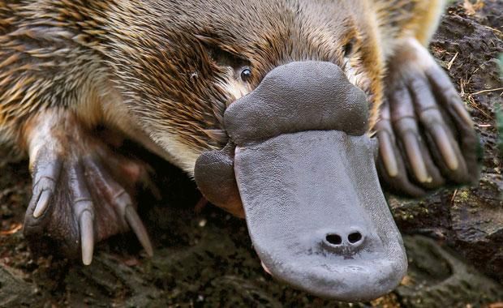
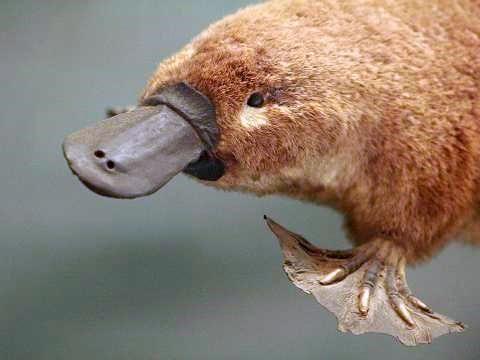
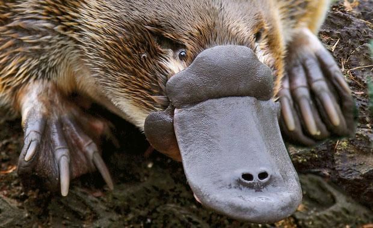
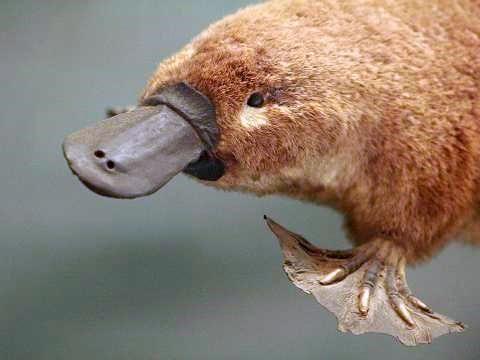

Name
Captain Cheerio
Likes
Cheerios, Head pats
Dislikes
The Tet Offensive, bath time
Thinks
Beyonce is overrated. I mean come on, what is she a popstar or somethin'?
Name
Mssr. Fancypants
Likes
Belgian waffles
Dislikes
belgians
Thinks
Recycling is important, but boats are more important. Yay boats!
Name
Fluffy McDuckingtons, IV
Likes
Scooters, triangles
Dislikes
The International Monetary Fund
Thinks
The reptile people live in the center of the earth and control international trade.
Name
Luchadora Gabriella
Likes
Nelson Mandella, potatoes
Dislikes
Disco, sweat socks
Thinks
The mask should never come off. Luchador is love. Luchador is life.
Name
Sir Swiwsalot P. Xavier, Esq.
Likes
Brute Architecture, belly rubs
Dislikes
The english class system
Thinks
Swans really are full of themselves. Look at them sitting there, preening. Disgusting!
Name
Dr. Henrietta Jones
Likes
Family values, thrashmetal
Dislikes
Hair gel, jogging
Thinks
Aglets are the name of the plastic tip at the end of the shoelace. Their true purpose is sinister.
 


